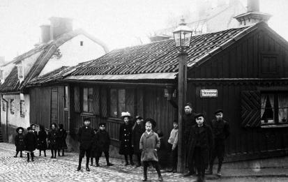

Södermalm i tid och rum. Stockholm
Bastugatan 43A. 1923. Mot väster.

Bastugatan 45. Korsningen med Kattgränd från öster. 1912
 Bastugatan 45. Korsningen med Kattgränd från öster. 1912
Bastugatan 45. Korsningen med Kattgränd från öster. 1912